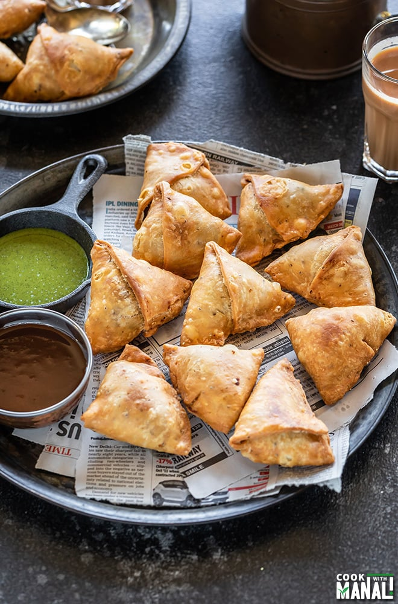

Samosa Receipe
Traditional Potato-Filled Punjabi Samosa

Traditional Punjabi Samosas are crunchy, flaky, fried and typically Potato-Filled. They are one of the most popular street food in North Indian cuisine. Samosa are savory, with a pastry-like crust and they are typically served with tamarind chutney or mint sauce. This recipe is everything you need to create the best Punjabi Samosa from scratch!
Ingredients:
Samosa Pastry:
- 2 cups all-purpose flour, 250 grams
- 1 teaspoon carom seeds
- 1 teaspoon salt
- 6 tablespoons Ghee (clarified butter), 50 grams
- 7 to 8 tablespoons water
Ground Spice Mix:
- 1/2 inch cinnamon
- 1 clove [optional]
- 3 black peppercorns
- 1 green cardamom
- 1/2 teaspoon cumin seeds
- 1/2 teaspoon fennel seeds
- 2 teaspoons coriander seeds
Oher Ingredients:
- 3 potatoes medium-sized, 300 to 350 grams
- 1/2 cup green peas, 180 grams
- 2 cups water, for steaming
- 1 tablespoon mustard oil, sub with sunflower, canola, or grapeseed oil
- teaspoon cumin seeds
- 1 teaspoon ginger, finely chopped, or 1 inch peeled ginger
- 2 teaspoons green chillies, finely chopped or 2 tsp finely chopped serrano peppers or 1 to 2 green chillies
- 1/2 teaspoon red chili powder or cayenne pepper
- 1 pinch asafoetida (hing) [optional]
- 1 to 2 teaspoons dry mango powder (amchur)
- salt as needed
- 1 tablespoon coriander leaves, chopped
- oil for deep frying, any neutral oil with high-smoke point
Steps:
Making the Samosas is a multi-step process. This guide will take you through making the savory filling and pastry dough. Then you will assemble the pastries and deep fry them.
Cook the Samosa filling
- Place 3 medium-sized whole potatoes (300-400 grams) in a large pot of lightly-salted boiling water (2-3 cups). Turn the stove to medium and bring the potatoes to a boil. Boil for 7-8 minutes or until fork-tender, then remove from heat.
- In a smaller pot, boil the green peas and 2 cups of water for about 5 minutes, or until tender.
- Once done, drain the potatoes and peas in a colader and set aside to boil.
Roast and Grind Spices
- Next toast the spices. This will release their oils and this is very necessary.
- To a small frying pan add your whole spices. Heat the spices for a few minutes over medium-low heat, until aromatic. Be careful not to burn the spices.
- Remove from heat and allow to completely cool.
- Then place in a coffee grinder and grind the spices into a semi-fine powder. No more than 6 pulses.
Assemble Filling
- Heat oil in a pan. add the cumin seeds and crackle them.
- Add the ginger and green chillies. Sauté for a few seconds until the raw aroma of ginger goes away.
- Add the steamed green peas, red chili powder, the freshly ground spice powder, dry mango powder and asafoetida.
- Stir and sauté on a low heat for 1 to 2 minutes.
- Add the potato cubes. Mix very well and sauté for about 2 to 3 minutes on low heat with frequent stirring.
- Set aside the potato filling aside to cool at room temperature.
Making the Samosa Pastry Dough
- Take the flour, carom seeds, salt in a bowl. Mix well and add ghee.
- With your fingertips rub the ghee or oil in the flour to get a breadcrumb like consistency.
- The whole mixture should clump together when joined and not fall apart.
- Add water in parts and knead to a firm dough.
- If the dough looks dry or floury, then add 1 to 2 tablespoons more water and knead.
- Cover the dough with a moistened napkin and set aside for 30 minutes.
Assembling & Shaping Samosa
- After resting the dough for 30 minutes, divide the dough in 6 equal pieces.
- Take each piece and roll in your palms first to make a smooth ball.
- Then roll it with a rolling pin keeping the thickness to 1 mm throughout.
- Cut with a knife or a pastry cutter through the center of the rolled samosa pastry.
- With a brush or with your finger tips, spread some water all over the edges.
- Join the two straight ends forming a cone shape.
- Press the edges so that they get sealed well.
- Stuff the prepared samosa cone with the prepared potato-peas stuffing.
- Pinch a part on the edge (check the video & photos). This helps the samosa to stand once it is shaped.
- Press both the edges. Be sure there are no cracks.
- Prepare all the samosa this way and keep covered with a moist kitchen napkin.
Frying Samosa
- Now heat oil for deep frying in a kadai or pan. Once the oil becomes hot (test by adding a small piece of dough – it should come up quickly once added to the hot oil).
Gently slide the prepared stuffed samosa & quickly reduce the flame to low.
- Turn over in between and fry until golden. Drain the fried samosa on paper towels to remove excess oil.
- Fry them in batches. For frying the second batch, again increase the temperature of the oil to medium-heat. Do not overcrowd the pan while frying.
- Add the samosa and then lower the flame, thereby decreasing the temperature of oil.
- Fry remain samosas in batches.